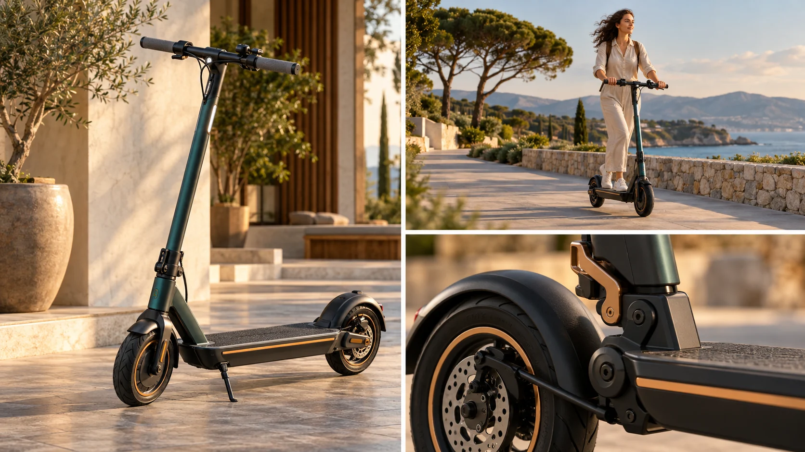

P10 · 중급 · 제작·활용
Electric Scooter Company: 제품 컷과 이동 컷의 조합
제품의 형태·사용·세부를 서로 보완하는 컷으로 나누고 누락을 점검한다.
그림에서 확인할 세 가지본편 컷과 제품별 납품 컷을 함께 계획한다.
1제품 전체
가상 스쿠터 그림에서 형태와 각 부분의 위치를 읽는다. 이용자가 탔을 때 가려지는 부위가 무엇인지 함께 확인한다.
2이동 사용
사용 장면에서는 제품과 사람의 관계, 이동 공간이 드러난다. 이 장면이 제품의 어떤 사용 상황을 설명하는지 한 문장으로 정리한다.
3바퀴와 연결 부위
오른쪽 아래의 바퀴와 앞쪽 연결 부위를 전체 제품 화면에서 다시 찾는다. 작은 화면이 제품의 어느 부분인지 알아볼 기준이 충분한지 살핀다.
촬영 설계
촬영을 이렇게 설계한다
납품본의 질문 구분
교육 제안: 브랜드 광고가 주는 인상과 제품별 영상이 답할 질문을 나눈다. 멀리서 달리는 컷만으로 알 수 없는 손잡이·발판 같은 세부 항목은 별도 촬영 목록에 넣는다.
전체와 세부를 짝짓기
교육 제안: 제품 전체, 실제 사용, 구조 세부를 한 세트로 구성한다. 넓은 컷을 나중에 크게 잘라 해결하려 하지 말고 세부가 잘 읽히는 독립된 시점도 계획한다.
누락 기준으로 검수
교육 제안: 각 납품본의 질문에 답할 화면이 있는지 목록과 대조한다. 이동 장면은 충분하지만 구조가 안 보이면 더 화려한 이동보다 빠진 설명 컷을 먼저 확보한다.
Electric Scooter Company 광고와 개별 제품 영상용 보충 촬영을 함께 했다.
원본 영상Electric Scooter Company: 제품 컷과 이동 컷의 조합
1. 정보의 중복
원본에서 제품 전체·사용 모습·부분 설명을 맡은 컷을 구분한다. 서로 다른 정보를 주는지 같은 장점만 반복하는지 비교한다.
2. 가려지는 부위
사용 장면에서 손과 발에 가려지는 제품 부위를 본다. 설명에 필요한 부위가 다른 컷에서 보완되는지 확인한다.
3. 영상별 용도
원작에서 이동의 인상과 제품 설명을 맡은 컷을 나누어 본다. 제작 일지만으로 파생본의 정확한 편집 순서를 추정하지 않는다.
재생이 제한되면 원본 영상 새 창을 이용하세요.
제작진 설명 · 한국어 요약 번역
제작 기록 요약과 범위
제작 범위
제작 일지는 The Electric Scooter Company의 빠른 호흡 홍보 영상을 소개한다.
짐벌 촬영과 드론 촬영과 편집을 맡았다고 기록한다.
보조 촬영
개별 제품 영상에 쓸 보조 화면도 따로 촬영했다.
확인과 학습안
장비와 촬영지는 일지에 나오지 않는다.
전체와 사용과 세부의 삼분할은 실제 촬영목록이 아닌 교육 제안이다.
Kling 프롬프트단문 인과 체인 · 16:9
내가 직접 만들어 본다
멀리서는 제품 전체와 움직임이 읽히고, 사람이 가리는 세부는 독립된 가까운 시점이 있어야 읽히는 인과를 지시한다.
- S01영상은 하나의 연속 쇼트다.
- S02화면에 드론 기체는 나오지 않는다.
- S03도시 길에서 사람이 전동 스쿠터를 탄다.
- S04처음 10초 동안 카메라는 멀리서 스쿠터를 따라간다.
- S05멀리서는 전체 형태와 달리는 느낌이 보인다.
- S06하지만 사람의 몸이 손잡이와 발판을 가린다.
- S07다음 10초 동안 카메라가 옆으로 다가간다.
- S08가까워지자 스쿠터가 화면에서 크게 보인다.
- S09바퀴와 앞쪽 연결 부위가 또렷하게 나타난다.
- S10마지막 10초 동안 카메라는 같은 거리를 유지한다.
- S11그래서 세부가 읽힌 채로 스쿠터가 계속 달린다.
- S12사람과 스쿠터는 처음 속도를 바꾸지 않는다.
- S13전체와 세부가 하나의 쇼트에서 짝을 이룬다.
[네거티브]
- 컷이 나뉘어 여러 쇼트로 끊기는 것 금지
- 화면에 드론 기체가 나타나는 것 금지
- 스쿠터가 자전거나 오토바이로 바뀌는 것 금지
- 처음부터 바퀴에 바짝 붙어 있는 것 금지
- 멀어서 스쿠터가 점으로 사라지는 것 금지
- 손잡이와 발판이 처음부터 훤히 드러나는 것 금지
- 카메라가 앞질러 가서 스쿠터가 뒤에 남는 것 금지
- 가까워졌는데 화면 크기가 그대로인 것 금지
- 바퀴와 연결 부위가 흐릿하게 뭉개지는 것 금지
- 거리가 흔들려 세부가 다시 멀어지는 것 금지
- 세부를 보여 주다 스쿠터가 멈추는 것 금지
- 접근에 맞춰 스쿠터가 느려지는 것 금지
- 전체와 세부 중 하나가 빠져 버리는 것 금지
결과에서 볼 것
- 멀리서 본 화면에서 제품 전체와 움직임이 읽혔는가
- 사람이 가리는 부분이 가까이 가기 전에는 안 보였는가
- 다가간 뒤 바퀴와 연결 부위가 또렷하게 읽혔는가